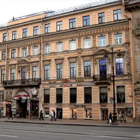
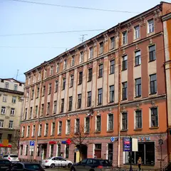
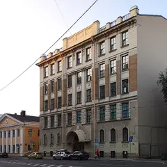
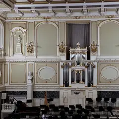
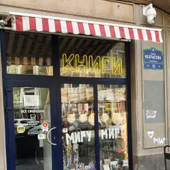
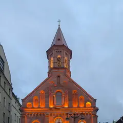
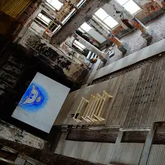
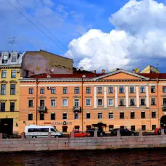
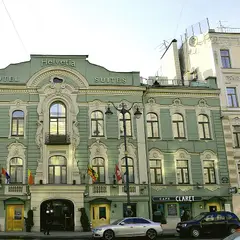
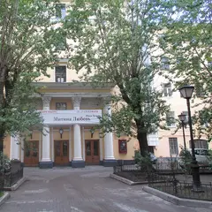

Подборку собрали 13 ноября, прошедшие события скрыты. Свежая афиша — на главной
Будний вечер · данные на 13 ноября
Куда сходить вечером после работы
В будний вечер не хочется ехать через весь город. Здесь 90 коротких планов: одна-две точки рядом друг с другом и чек примерно до 3 000 ₽ на человека, 56 из них — в центре. Ниже — 9 вечерних событий в ближайшие будни.
- 90 планов
- 9 событий
Короткие планы на вечер 24 из 90
- Александринский театр · Театр · м. Гостиный двор
- 5 минут пешкомOy! · Коктейльный бар
Классика в новой режиссуре и ложи в золоте старейшего драмтеатра, а потом 5 минут пешком — мартини-бар с устрицами.
Открыть план: Александринка и мартини с устрицамиПозвать сюда: Александринка и мартини с устрицами
Фото: Bene Riobó, CC BY-SA 4.0 · Wikimedia Commons
- Музей Анны Ахматовой в Фонтанном доме · Музей · м. Маяковская
- 6 минут пешкомSalone Pasta&Bar · Итальянский ресторан
Квартира Ахматовой во флигеле Фонтанного дома и тихий сад за ним, а потом 6 минут пешком вдоль Фонтанки — свежая паста без лишней торжественности.
Открыть план: Ахматова и паста на ФонтанкеПозвать сюда: Ахматова и паста на Фонтанке
Фото: MilanSPb, CC BY-SA 4.0 · Wikimedia Commons

- Кинотеатр «Аврора» · Кинотеатр · м. Гостиный двор
- 2 минуты пешкомProstovino · Винный бар
Фильм в старейшем кинотеатре города, а через пара минут пешком — винный бар с доступными бокалами и простыми закусками.
Открыть план: Бархатный зал «Авроры» и бокал винаПозвать сюда: Бархатный зал «Авроры» и бокал вина
Фото: GAlexandrova, CC BY-SA 4.0 · Wikimedia Commons

- Во весь голос · Книжный магазин · м. Чернышевская
- 1 минута пешкомХроники · Рюмочная
Места для чтения и встречи с авторами в «Во весь голос», а через дорогу — бар-рюмочная с творческой публикой.
Открыть план: Большой книжный и рюмочнаяПозвать сюда: Большой книжный и рюмочная
Фото здания: GAlexandrova, CC BY-SA 4.0 · Wikimedia Commons

- Ruc's Heaven · Винный бар · м. Площадь Восстания
- 3 минуты пешкомПляски · Танцевальный бар
Кава, альбариньо и винные коктейли в баре на Песках, а через пару минут — танцевальный бар с диско-караоке по субботам.
Открыть план: Вино на Песках и танцыПозвать сюда: Вино на Песках и танцы
Фото здания: Bestalex, CC BY-SA 4.0 · Wikimedia Commons
- Дворцовая площадь · Площадь · м. Адмиралтейская
- 9 минут пешкомЧАО Какао · Какаочная
Арка Главного штаба и Александровская колонна в вечерней подсветке, а потом 9 минут пешком — густой горячий шоколад из окошка какаочной.
Открыть план: Дворцовая и горячий шоколадПозвать сюда: Дворцовая и горячий шоколад
Фото: Godot13, CC BY-SA 4.0 · Wikimedia Commons

- Государственная академическая Капелла · Концертный зал · м. Адмиралтейская
- 2 минуты пешкомBellevue · Ресторан
Хор или симфония в старинном зале с идеальной акустикой у Певческого моста, а через пару минут пешком — ужин над крышами у Дворцовой.
Открыть план: Капелла и ужин с видом на ДворцовуюПозвать сюда: Капелла и ужин с видом на Дворцовую
Фото: GAlexandrova, CC BY-SA 4.0 · Wikimedia Commons

- Все свободны · Книжный магазин · м. Чернышевская
- 4 минуты пешкомGiallo Bistro · Итальянское бистро
Полистайте книги на мансарде уютного независимого книжного, а потом 4 минуты пешком — камерное итальянское бистро, которое часто советуют для первого свидания.
Открыть план: Книжный на Некрасова и итальянское бистроПозвать сюда: Книжный на Некрасова и итальянское бистро
Фото: ELindas, CC BY-SA 4.0 · Wikimedia Commons

- Яани Кирик · Концертный зал · м. Горный институт
- 10 минут пешкомOggi bistro · Итальянское бистро
Классика при свечах в эстонской церкви в Коломне, а потом 10 минут пешком — паста и тирамису во дворе «Бутылки» на Новой Голландии.
Открыть план: Концерт при свечах и итальянское бистроПозвать сюда: Концерт при свечах и итальянское бистро
Фото: Vasagavavv, CC0 · Wikimedia Commons
- Музей Довлатова · Музей · м. Достоевская
- 5 минут пешкомDuo Asia · Паназиатский ресторан
Квартира Сергея Довлатова и Ленинград 70-х в одном доме, а потом прогулка по Рубинштейна до Duo Asia — 5 минут пешком.
Открыть план: Ленинград Довлатова и ужин на РубинштейнаПозвать сюда: Ленинград Довлатова и ужин на Рубинштейна
Фото: Kommunalka1912, CC BY-SA 4.0 · Wikimedia Commons
- Михайловский театр · Театр оперы и балета · м. Невский проспект
- 7 минут пешкомChang · Азиатское бистро
Балет в уютном бело-красном зале на площади Искусств — билеты достать проще, чем в Мариинку, — а после 7 минут пешком до зелёного зала Chang.
Открыть план: Михайловский театр и азиатское бистроПозвать сюда: Михайловский театр и азиатское бистро
Фото: A.Savin, CC BY-SA 3.0 · Wikimedia Commons
- В тишине · Иммерсивный музей · м. Чернышевская
- 10 минут пешкомDuo Gastrobar · Гастробар
Час без слов в интерактивном музее, где гиды общаются жестами, а потом 10 минут пешком — наговориться в гастробаре Duo.
Открыть план: Музей тишины и гастробарПозвать сюда: Музей тишины и гастробар
Фото здания: Vityavo, CC BY-SA 4.0 · Wikimedia Commons
- Театр музыкальной комедии · Театр · м. Гостиный двор
- 8 минут пешкомМама Тата · Кафе
Мюзикл или оперетта в нарядном зале Театра музыкальной комедии, а потом 8 минут пешком — хачапури и сытные салаты в «Маме Тате».
Открыть план: Мюзикл на Итальянской и домашняя кухняПозвать сюда: Мюзикл на Итальянской и домашняя кухня
Фото: Книжная пыль, CC BY-SA 4.0 · Wikimedia Commons

- Анненкирхе · Арт-пространство · м. Чернышевская
- 1 минута пешкомDuo Gastrobar · Гастробар
Органный концерт в церкви с выразительными голыми стенами, а гастробар Duo — прямо у кирхи: севиче и бычьи хвосты.
Открыть план: Орган в Анненкирхе и гастробарПозвать сюда: Орган в Анненкирхе и гастробар
Фото: Екатерина Борисова, CC BY-SA 4.0 · Wikimedia Commons

- KGallery · Галерея · м. Гостиный двор
- 2 минуты пешкомSalone Pasta&Bar · Итальянский ресторан
Живопись XX века и ленинградское искусство в старинном особняке, а потом пара минут пешком — свежая паста на Фонтанке.
Открыть план: Особняк KGallery и пастаПозвать сюда: Особняк KGallery и паста
Фото здания: GAlexandrova, CC BY-SA 4.0 · Wikimedia Commons
- Siberia · Приватная баня · м. Нарвская
- 7 минут пешкомAF Brew Taproom · Крафтовый бар
Камерный банный клуб у Обводного: отдельная парная и парение с мастером, а потом 7 минут пешком — флагманский тапрум AF Brew.
Открыть план: Парение с мастером и тапрум AF BrewПозвать сюда: Парение с мастером и тапрум AF Brew
Фото: НАндреев, CC BY-SA 4.0 · Wikimedia Commons
- Salone Pasta&Bar · Итальянский ресторан · м. Гостиный двор
- 3 минуты пешкомThe Hat · Джаз-бар
Лёгкий итальянский ужин на Фонтанке, а потом пара минут пешком — крошечный бар The Hat, где почти каждый вечер играют джаз. Места у музыкантов разбирают быстро.
Открыть план: Паста и живой джазПозвать сюда: Паста и живой джаз
Фото здания: GAlexandrova, CC BY-SA 4.0 · Wikimedia Commons

- Арт-центр «Пушкинская-10» · Арт-центр · м. Площадь Восстания
- 5 минут пешкомCafé Claret · Ресторан
Мастерские, галереи и музей нонконформизма в бывшем сквоте, а потом 5 минут пешком — неспешный ужин в тихом дворе отеля «Гельвеция».
Открыть план: Пушкинская-10 и ужин во двореПозвать сюда: Пушкинская-10 и ужин во дворе
Фото здания: GAlexandrova, CC BY-SA 4.0 · Wikimedia Commons
- Ярумэн · Раменная · м. Адмиралтейская
- 1 минута пешкомТолстый фраер на Малой Морской · Пивной ресторан
Густой рамен у Невского, а через дорогу — пивной ресторан в интерьере подводной лодки: большой выбор пива и спорт на большом экране.
Открыть план: Рамен и матч в подводной лодкеПозвать сюда: Рамен и матч в подводной лодке
Фото здания: Анастасия Юрьевна Львова, CC BY-SA 4.0 · Wikimedia Commons
- Хроники · Рюмочная · м. Чернышевская
- 8 минут пешкомHarry Not Original Pub · Паб
Бутерброд с килькой и чача в рюмочной, задавшей моду на новые рюмочные, а потом 8 минут пешком — английский паб с трансляциями матчей.
Открыть план: Рюмочная и паб с псом ГарриПозвать сюда: Рюмочная и паб с псом Гарри
Фото здания: Никонико962, CC BY-SA 4.0 · Wikimedia Commons
- В тишине · Иммерсивный музей · м. Чернышевская
- 7 минут пешкомMindal Cafe · Кавказский ресторан
Музей, где гиды говорят жестами, а гости — без слов: у них есть формат для пар. После тишины — разговор за хинкали и мцвади в Mindal Cafe, 7 минут пешком.
Открыть план: Свидание в тишинеПозвать сюда: Свидание в тишине
Фото здания: Vityavo, CC BY-SA 4.0 · Wikimedia Commons
- Спас на Крови · Музей · м. Невский проспект
- 5 минут пешкомDaiquiri · Коктейльный бар
Храм, покрытый мозаикой изнутри, пока он открыт, а потом 5 минут пешком — ночной бар с десятками вариаций дайкири до четырёх утра.
Открыть план: Спас на Крови и ночь дайкириПозвать сюда: Спас на Крови и ночь дайкири
Фото: Рустам Абдрахимов, CC BY 3.0 · Wikimedia Commons
- Стендап-клуб на Белинского · Стендап-клуб · м. Маяковская
- 1 минута пешкомЧешская пивница · Пивной ресторан
Концерт в небольшом стендап-зале у Литейного, а потом — пражская пивная почти по соседству: разлить и обсудить лучшие шутки.
Открыть план: Стендап и чешская пивницаПозвать сюда: Стендап и чешская пивница
Фото здания: Никонико962, CC BY-SA 4.0 · Wikimedia Commons
- Театр Комедии им. Акимова · Театр · м. Гостиный двор
- 5 минут пешкомKriek на Итальянской · Пивной ресторан
Лёгкий спектакль в доме Елисеевых — хороший первый поход в театр вдвоём, — а потом 5 минут пешком — мидии и бельгийское пиво на Итальянской.
Открыть план: Театр Комедии и бельгийские мидииПозвать сюда: Театр Комедии и бельгийские мидии
Фото: Florstein, CC BY-SA 4.0 · Wikimedia Commons


Вечерние события в будни 9
Капелла · м. Адмиралтейская · 900–1 300 ₽ · 6+
Гитарист Гасан Багиров переводит в джаз мелодии из отечественного кино — Дунаевские, Шостакович, Хренников. Зал Капеллы на Мойке, билеты до 1 300 ₽.
Подробнее: Гасан Багиров. «Джаз на Неве»Позвать сюда: Гасан Багиров. «Джаз на Неве»Билеты : Гасан Багиров. «Джаз на Неве» (страница с билетами, откроется в новой вкладке)
Фото: GAlexandrova, CC BY-SA 4.0 · Wikimedia Commons
Театр музыкальной комедии · м. Гостиный двор · 400–2 850 ₽ · 12+
Оперетта Легара о фиктивном браке, который вдруг становится настоящим: парижский карнавал, богема и вальсы. Главные роли отмечены «Золотыми софитами».
Подробнее: Граф ЛюксембургПозвать сюда: Граф ЛюксембургБилеты : Граф Люксембург (страница с билетами, откроется в новой вкладке)
Фото: Книжная пыль, CC BY-SA 4.0 · Wikimedia Commons
Замок на Невском · м. Маяковская · от 1 600 ₽ · 12+
Иммерсивное мистическое шоу: герои «Шинели», «Носа» и «Вия» в одном сюжете, а зритель может вмешаться в ход действия. По пятницам и субботам в 19:00, недорого.
Подробнее: Петербург ГоголяПозвать сюда: Петербург ГоголяБилеты : Петербург Гоголя (страница с билетами, откроется в новой вкладке)
Commode · м. Маяковская · 390–1 990 ₽ · 18+
У микрофона только девушки-комики из Петербурга и Москвы: про бывших, свидания и всё наболевшее. Идёт почти каждый вечер на Невском — готовый план для девичника.
Подробнее: Стендап по-женскиПозвать сюда: Стендап по-женскиБилеты : Стендап по-женски (страница с билетами, откроется в новой вкладке)
Отель AKYAN · м. Площадь Восстания · от 4 500 ₽
Отель на одну ночь становится кабаре в духе Прекрасной эпохи: три этажа, несколько сцен и больше двадцати артистов.
Подробнее: ÇAVADISCO CABARETПозвать сюда: ÇAVADISCO CABARETБилеты : ÇAVADISCO CABARET (страница с билетами, откроется в новой вкладке)
Анненкирхе · м. Чернышевская · 1 400–2 600 ₽ · 12+
Поздний органный концерт в лютеранской церкви на Кирочной: начало в 22:30, полумрак и музыка вместо бара. Несколько пятниц на выбор.
Подробнее: Ночной орган в АнненкирхеПозвать сюда: Ночной орган в АнненкирхеБилеты : Ночной орган в Анненкирхе (страница с билетами, откроется в новой вкладке)
Фото: Екатерина Борисова, CC BY-SA 4.0 · Wikimedia Commons

Театр «На Литейном» · м. Маяковская · 800–2 900 ₽ · 16+
Бомарше в постановке Сергея Морозова — яркий спектакль-праздник про самый сумасшедший день Фигаро. Длинный, 3 ч 15 мин, зато настроение гарантировано.
Подробнее: Женитьба ФигароПозвать сюда: Женитьба ФигароБилеты : Женитьба Фигаро (страница с билетами, откроется в новой вкладке)
Фото: Thomon, CC BY-SA 4.0 · Wikimedia Commons
Мариинский театр · м. Садовая · 3 750–14 000 ₽ · 6+
Поздний большой балет Петипа на музыку Глазунова: рыцарская легенда, сон-видение и пышные венгерские танцы. Три вечера подряд, вместе с труппой выходят ученики Вагановки.
Подробнее: РаймондаПозвать сюда: РаймондаБилеты : Раймонда (страница с билетами, откроется в новой вкладке)
Фото: Jaimrsilva, CC BY-SA 4.0 · Wikimedia Commons
СКА Арена · м. Парк Победы · 500–2 700 ₽ · 0+
Китайский клуб КХЛ проводит домашние игры в Петербурге, на СКА Арене. В гостях московский ЦСКА — хоккей высшего уровня по цене билета в кино.
Подробнее: Шанхай Дрэгонс — ЦСКАПозвать сюда: Шанхай Дрэгонс — ЦСКАБилеты : Шанхай Дрэгонс — ЦСКА (страница с билетами, откроется в новой вкладке)
Фото: Florstein, CC BY-SA 4.0 · Wikimedia Commons


Как позвать
- Выбери план, место или событие — в карточке адрес, цены и маршрут в Яндекс Картах.
- Нажми «Позвать сюда» — соберётся приглашение-игра для свидания или голосование для компании.
- Отправь ссылку в любой мессенджер: тебе ответят, а компания отметит, куда и когда может. Бесплатно и без регистрации.